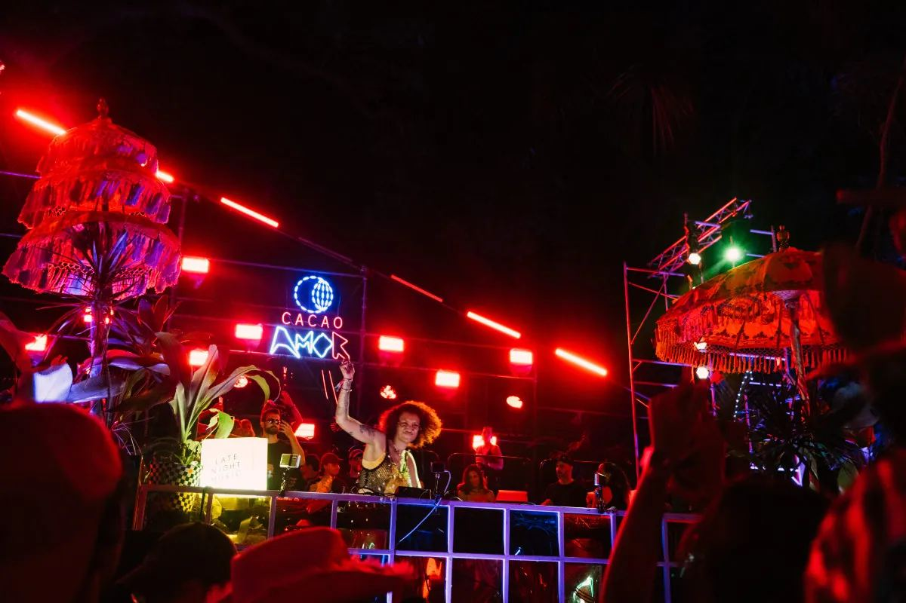

Festivals · Music
Panama Crossroads 2027 (5th edition)
- Dates
- –
- Venue
- Amador
- Location
- Panama City, Panama
- Format
- In-person
- Category
- Music
- Industry
- Music / Culture
- Organiser
- Panama Crossroads
- Price
- USD 39 (Friday general, early entry) to USD 139 (two-day VIP combo), presale phase 2 on the official tickets page (24 Nov 2026)
- Official website
- https://panamacrossroads.net/
- Tickets
- https://panamacrossroads.net/entradas/
About
First lineup headlined by Milo J and Los Cafres. The ticketed music nights are Friday and Saturday. Panama dates are local (Panama time, UTC-5 all year, no daylight saving).
Topics: Latin music, reggae, gastronomy, creative industries.
No organiser attendance figure found on the official pages checked (24 Nov 2026). Ranked by an estimated size tier 'medium' (about 1,000-10,000 attendees; our judgement from format, venue and scale, not an official number).
Sources
- Official — https://panamacrossroads.net/
- Official government media (SERTV, state broadcaster) — https://sertv.gob.pa/en-su-quinta-edicion-panama-crossroads-se-realizara-del-28-al-30-de-enero-de-2027/
- Official — https://panamacrossroads.net/entradas/